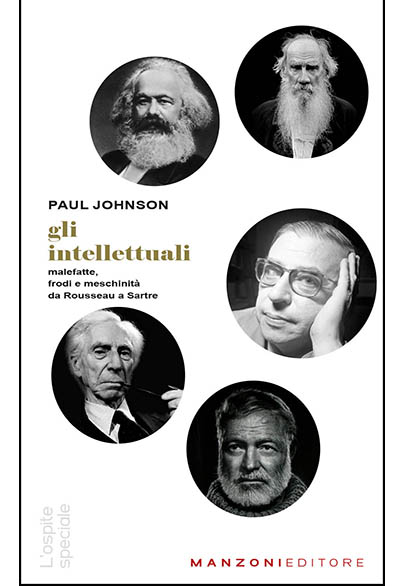

28:57 · 5 OPERE
Il pensiero che cura.
Il filo del discorso
Il pensiero viene presentato come una pratica pubblica capace di contrastare l’abitudine, la propaganda e la rinuncia al giudizio. Dr Divago parte dall’uso indiscriminato della parola cultura e distingue la notorietà dal compito di chi rende accessibili le idee. I richiami a Bernays, Lippmann ed Ellul introducono il rapporto fra comunicazione e potere; il giudizio polemico su un libro di Johnson apre invece la domanda sulla responsabilità dell’intellettuale.
Leggi la sintesi completaRiduci la sintesi
La figura di chi leggeva le didascalie nei cinema muti diventa una metafora del lavoro culturale: tradurre, spiegare e permettere a ciascuno di comprendere. Una seconda immagine, attribuita a Keats senza indicare un testo preciso, descrive la diffusione delle idee attraverso il polline di una foresta. Il riferimento a La società del Contrario e al mito di Er nella Repubblica accompagna questa riflessione sulla partecipazione. Il discorso passa poi alla televisione, alle piattaforme e al sospetto del relatore verso alcune forme di visibilità mediatica; questi esempi polemici restano distinti da fatti dimostrati. Nella parte conclusiva, radicale significa risalire alla radice di un problema, riconoscendo una ragione valida anche quando arriva da un avversario. Il richiamo evangelico alla bontà e il riconoscimento dell’imperfezione umana portano alla tesi finale: interrogare i propri convincimenti può liberare da errori e automatismi. La cura evocata dal titolo è una metafora etica e filosofica.
I libri nel discorso

Propagandes
Note sul riferimento
Copertina: Economica · Classiques des sciences sociales · ISBN 9782717818482
Immagine autentica dell’opera, controllata visivamente; l’edizione di riferimento non è attribuita al filmato.
È annunciato un testo intitolato Propaganda di Ellul: identificato con Propagandes, distinto dall’opera di Bernays.

Gli intellettuali
Identificazione probabile
Note sul riferimento
Copertina: Manzoni Editore · L’ospite speciale · copertina dell’edizione 2024
Copertina autentica Manzoni Editore, presente nel catalogo dal 2024; non è la copertina Longanesi del 1989 e non viene retrodatata al video. Non viene associato a questa immagine l’ISBN della diversa edizione Longanesi.
Johnson e un libro sugli intellettuali: identificazione probabile con Gli intellettuali, senza certezza sull’edizione.

La società del contrario
Note sul riferimento
Copertina: Zambon · 2005
Copertina autentica dell’edizione di riferimento, controllata visivamente. Non identifica l’esemplare letto o citato nel video.
Il relatore annuncia il proprio libro La società del Contrario.

La Repubblica
Note sul riferimento
Copertina: Laterza · La Repubblica · edizione con testo a fronte di riferimento
Immagine associata all’ISBN di riferimento e controllata visivamente; edizione e traduzione non identificate come quelle citate o lette nel video.
Il mito di Er è esplicitamente collegato alla Repubblica, libro X.

Bibbia
Note sul riferimento
Copertina: San Paolo, 2014 · Nuova Versione dai Testi Antichi · edizione di riferimento
Il richiamo a Gesù e alla bontà corrisponde a Marco 10,18 e Luca 18,19; il parlato è una parafrasi.